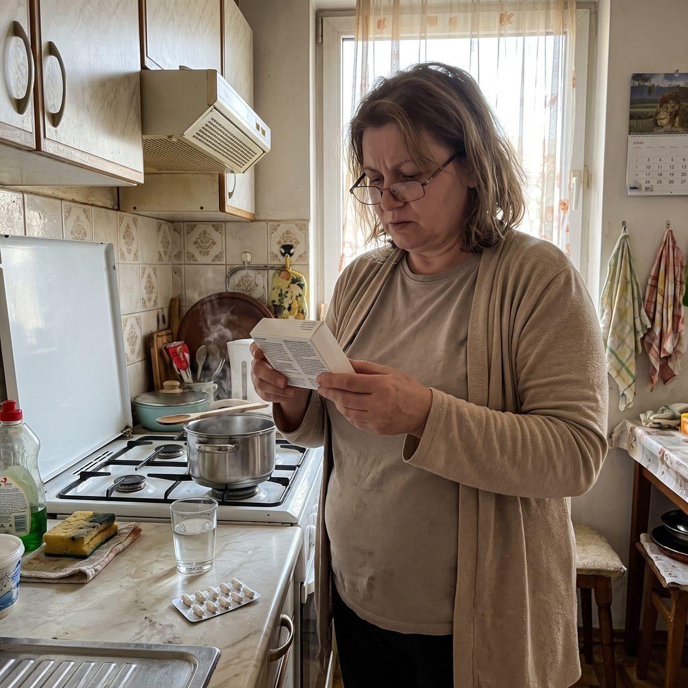

„Капанът на капсулите“: защо 4 от 5 души спират берберина още първия месец и защо той почти не стига до кръвта
Открий метода „през кожата“, който заобикаля стомаха, и кои 5 продукта с берберин наистина минават проверката

Няма значение за какво се оплакваш: корем, който не се стопява след 40, постоянен глад, панталони, които вече не ти стават. Щом попиташ приятелка, фармацевтка или жена във фейсбук група, девет от десет ще ти кажат едно и също: „Пий берберин.“
Малко природни съставки са толкова изследвани за метаболизма. Берберинът се извлича от кисел трън и други растения и включва AMPK, главния енергиен превключвател в клетките. AMPK кара клетките да използват захарта и мазнините за енергия, вместо да ги трупат.
Но да намериш берберин във форма, която наистина работи? Това е изненадващо трудно. Честно казано, рядко сме виждали по-объркваща категория.
Влизаш в аптеката или търсиш онлайн и виждаш десетки кутии. На едната пише „500 мг“, на другата „1 000 мг“, на третата с големи букви „комплекс за изгаряне на мазнини“. Почти невъзможно е да разбереш коя от тях наистина ще се усвои.
Повечето жени вярват на етикета. Взимат кутията, на която пише „висока доза“, пият я седмици наред и не усещат нищо.
И обвиняват себе си: „Явно берберинът не действа на мен.“
Това е Капанът на капсулите.
Коремът не се стопява. Пиеш берберин. До кръвта стига малка част от него. Коремът пак не се стопява. Купуваш нова кутия. Нищо не се променя.
Ето какво не пише на кутията:
Повечето берберин, който поглъщаш, се губи, преди да стигне до кръвта.
Голяма част минава през червата непроменена. Друга част се разгражда още в тънките черва. В изследване при хора до кръвта стигат само 23% от погълнатото количество.
А стомахът плаща цената. В едно клинично проучване 34,5% от хората, които са пили берберин, са имали временни стомашно-чревни оплаквания. Капсулите се пият по два-три пъти на ден и затова 4 от 5 души спират още първия месец.
Когато намериш берберин, който заобикаля стомаха, в начин на прием, който не се забравя и е лесен, най-после излизаш от капана.
Ето какво се случва, когато най-после излезеш от капана
- Апетитът утихва и спираш да ровиш в хладилника всяка вечер
- Ядеш с всички на масата, просто по-малко, защото не си гладна
- Посягаш по-рядко към вафлички и шоколад
- Коланът отива с една дупка навътре
- Блузата отново влиза в панталона без корема ти да изпъква
- Най-после се чувстваш като себе си
Защо повечето продукти с берберин те държат в капана
Докато проучвахме темата, бързо разбрахме, че за да излезеш от Капана на капсулите, не стига просто „да пиеш берберин“. Трябват правилният път, правилният ритъм и правилната комбинация.
За да усетиш това, за което говорят изследванията, продуктът трябва да мине през три препятствия:
Твоят списък „Как да излезеш от капана“
- Път през кожата, без стомаха и черния дроб. Капсулата минава през стомаха, червата и черния дроб и там се губи по-голямата част от берберина. Лепенката го дава през кожата направо в кръвта. В изследване в българска лаборатория съставките на FitPatches се усвояват така с 142% повече, отколкото през стомаха.
- Веднъж на ден, а не два-три пъти. Колкото и добър да е един продукт, няма да помогне, ако стои забравен в шкафа. При хапчетата 4 от 5 души не успяват да ги пият редовно още първия месец. При лепенките само 1 от 5 не ги слага редовно. Една лепенка сутрин е нещо, което не се забравя и е най-лесната част от сутрешната ти рутина.
- Не само берберин. Канелата и нарът също имат собствени мета-анализи за тегло и талия и действат по различен начин. Берберинът включва енергийния превключвател в клетките. Канелата кара мастните клетки да горят енергия като топлина, ефект, потвърден и в човешки мастни клетки. Нарът е силен антиоксидант.
Ако липсва дори едно от трите, оставаш в капана.
Изключително рядко се намира продукт, който съчетава и трите. Много жени сменят кутия след кутия, преди да намерят нещо, което наистина помага. Затова да намериш и трите на едно място е огромна разлика.
Какво да избягваш (това те държи в капана)
- Капсули и таблетки „по 2–3 пъти дневно“ (4 от 5 души ги спират още първия месец)
- „Комплекси за изгаряне на мазнини“ (берберинът е някъде в края на списъка и не пише колко е)
- Отвари и чайове от кисел трън „на око“ (не знаеш колко берберин слагаш в чашата)
- Берберин на прах (горчив е и пак минава през стомаха)
- Ниски дози, с които само се залъгваш
- Продукти, които обещават „минус 10 кг за месец“
Топ 5 продукта с берберин през 2026
Сравнихме петте най-разпространени продукта с берберин, които жените в България купуват. Гледахме четири неща: минава ли през стомаха, колко пъти на ден трябва да го взимаш, какво показват изследванията и колко струва на ден. Ето ги, подредени от най-добрия към най-слабия: